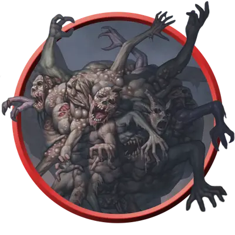

Рой конечностей зомби
Swarm of Zombie Limbs
Маленький рой крошечной Нежити, Нейтральная Злая

Класс Защиты 12 Инициатива +2 (12)
Хиты 26 (4к8 + 8)
Скорость 30 футов
| мод | спас | ||
|---|---|---|---|
| СИЛ | 12 | +1 | +1 |
| ЛОВ | 14 | +2 | +2 |
| ТЕЛ | 14 | +2 | +2 |
| мод | спас | ||
|---|---|---|---|
| ИНТ | 1 | −5 | −5 |
| МДР | 5 | −3 | −3 |
| ХАР | 3 | −4 | −4 |
Иммунитеты Некротический, Яд; Испуганный, Истощение, Окаменевший, Опрокинутый, Опутанный, Отравленный, Очарованный, Ошеломлённый, Парализованный, Схваченный
Чувства пассивное Восприятие 7, Слепое зрение 30 футов
Языки нет
Опасность 1 (200 опыта; БВ +2)
Особенности
Рой. Рой может занимать пространство другого существа и наоборот, а также рой может проходить через отверстия, которые достаточно велики для Крошечного куска плоти. Рой не может восстанавливать Хиты или получать Временные хиты.
Действия
Гнилая плоть. Бросок рукопашной атаки: +4, досягаемость 5 фт. Попадание: 9 (2к6+2) Некротического урона — или 5 (1к6+2) Некротического урона, если рой Окровавлен, — и цель Отравлена до конца её следующего хода.
Бонус мастерства +2
Среда обитания Город, Подземье, Царство теней
Сокровища Отсутствуют
Зомби
Неутомимые ожившие трупы
Зомби — это бездумные ожившие трупы, как правило, жутко изуродованные разложением и смертельными ранами. Они служат сверхъестественным силам, которые вдохнули в них жизнь, таким как злые некроманты или духи исчадий. Зомби неутомимы, безжалостны и живучи, а их мёртвая плоть может перенести даже самые тяжёлые ранения. Они способны выполнять простые приказы, но движет ими не разум, а первобытный инстинкт. Мертвецы готовы беспрекословно выполнять любой приказ, работать без устали и пробиваться с боем сквозь строй врагов, однако их легко останавливает препятствие или непредвиденное обстоятельство.
Обычно зомби создаются из трупов Гуманоидов, но останки других существ также могут стать живыми мертвецами. Такие чудовищные зомби наследуют силу, которая была у них при жизни, или часть своих сверхъестественных способностей, но используют их в лучшем случае беспорядочно.
Иногда расчленения недостаточно, чтобы заглушить неугасимую ярость зомби. Рои конечностей зомби оживают из сброшенной плоти зомби и набрасываются на несчастных охотников за чудовищами, которые ошибочно полагали, что их работа закончена.